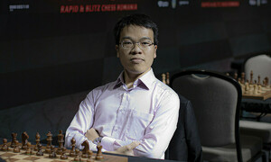
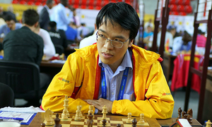

-
Vua cờ Carlsen xin thua sau bốn nước
Thắng Đinh Lập Nhân vì đối thủ mất mạng internet ở ván một, Magnus Carlsen xin thua sớm ở ván hai, tại giải cờ vua online Chessable Masters hôm 30/6.
-

FIDE tổ chức Olympiad cờ vua online
Liên đoàn cờ vua thế giới (FIDE) hôm 30/6 thông báo tổ chức Olympiad cờ vua 2020 online từ 22/7 đến 30/8. Mỗi đội tuyển tham dự gồm sáu kỳ thủ chính thức
-

Quang Liêm: 'Tôi học hỏi từ Nguyên'
Liên đoàn cờ vua thế giới (FIDE) hôm 30/6 thông báo tổ chức Olympiad cờ vua 2020 online từ 22/7 đến 30/8. Mỗi đội tuyển tham dự gồm sáu kỳ thủ chính thức
-
Caruana phế tượng, hạ Nepomniachtchi
Liên đoàn cờ vua thế giới (FIDE) hôm 30/6 thông báo tổ chức Olympiad cờ vua 2020 online từ 22/7 đến 30/8. Mỗi đội tuyển tham dự gồm sáu kỳ thủ chính thức
-
Vua cờ Carlsen thắng sát Nakamura
Magnus Carlsen thắng Hikaru Nakamura 3-2, ở vòng một siêu giải online mang tên Vua cờ Na Uy, hôm 18/4. Carlsen cầm quân trắng, thắng ván đầu tiên nhờ tận dụng được điểm yếu của tượng đen